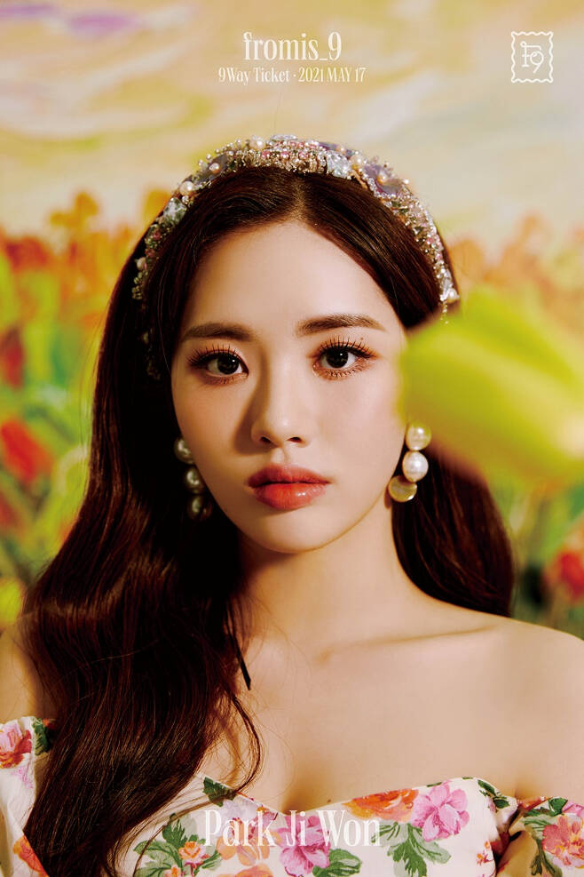

그냥 심심해서 만든 프로미스나인 아카이브


-
Member
이새롬 (Lee Sae-Rom)
대한민국의 가수. 플레디스 엔터테인먼트 소속 8인조 걸그룹 프로미스나인의 멤버이며 캡틴과 리드댄서, 서브보컬을 맡고 있다. 탄탄한 댄스 실력과 여러 매력을 고루 갖춘 팀내 맏언니이자 캡틴으로 프로미스나인을 이끌어 나가고 있다.
-
송하영 (Song Hayoung)
대한민국의 가수. 플레디스 엔터테인먼트 소속 8인조 걸그룹 프로미스나인의 멤버이며, 메인보컬을 맡고 있다. 메인의 보컬실력과 힙합 전공으로 어려서부터 다져진 댄스 실력, 여기에 작사, 작곡까지 가능한 육각형 멤버로 알려져있다. 덕후몰이상이라 불리는 귀여운 외모와 가끔씩 보이는 엉뚱함이 매력적인 멤버지만 겉보기와는 달리 강한 체력과 근성, 힙합 댄스 전공자다운 격한 춤선을 소유한 반전매력도 갖추고 있다.
-

박지원 (Park Ji-Won)
대한민국의 싱어송라이터. 플레디스 엔터테인먼트 소속 8인조 걸그룹 프로미스나인의 멤버이며, 메인보컬을 맡고있다. 풍부한 성량과 짙은 감성이 매력적인 보컬을 갖고있으며, 작사, 작곡에도 능하다. 특유의 밝고 에너지 넘치는 매력으로 각종 컨텐츠에서 종횡무진 활약하는 멤버.
-
노지선 (Roh Ji-Sun)
대한민국의 가수. 플레디스 엔터테인먼트 소속 8인조 걸그룹 프로미스나인의 멤버이며, 리드댄서와 서브보컬을 맡고 있다. 매력적인 음색으로 곡의 중심을 잘 잡는 멤버다. 특유의 오묘한 눈빛이 매력적이며, 운동으로 다져진 탄탄한 몸매도 인상적이다. 자체 컨텐츠로 ASMR을 기획/제작하고 있으며 개인기로 회를 뜨는 등 이전의 아이돌 멤버들이 좀처럼 하지 않았던 시도들을 많이 하는 멤버다.
-
이서연 (Lee Seo-Yeon)
대한민국의 싱어송라이터 가수. 플레디스 엔터테인먼트 소속 8인조 걸그룹 프로미스나인의 멤버이며, 메인댄서와 리드보컬을 맡고 있다. 보컬, 랩, 댄스 모두 수준급에 작사, 작곡 능력까지 갖춘 실력파 올라운더. 시크하고 고혹적인 외모에 그렇지 않은 순수한 매력으로 폭넓은 팬층을 가지고 있다. 무뚝뚝한 표정 아래 감춰진 깨발랄한 장난끼가 매력포인트로, 멤버들 사이에서 가장 많은 귀여움을 받고 있다.
-
이채영 (Lee Chae-young)
대한민국의 가수. 플레디스 엔터테인먼트 소속 8인조 걸그룹 프로미스나인의 멤버이며 서브보컬을 맡고 있다. 장신의 체구에서 나오는 파워풀한 춤선이 인상적이며, 시원시원하고 서구적인 외모와 비율을 가졌다. 차가운 외모와는 다르게 눈물이 많고 귀여운 성격이다. 데뷔 초엔 랩 담당으로 시작해 Feel Good 활동부터는 후렴구를 맡으며 보컬적인 역량도 보여주는 다재다능한 멤버다. 또 입담이 굉장히 좋기에 팀에서 예능을 담당하며 항상 누군가를 놀릴때 빠지 는적 없는 유쾌한 성격이다.
-

이나경 (Lee Na-Gyung)
대한민국의 가수 겸 배우. 플레디스 엔터테인먼트 소속 8인조 걸그룹 프로미스나인의 멤버이며, 서브보컬[20]을 맡고 있다. 멤버들이 꼽은 프로미스나인 최고의 비주얼 담당이다. Feel Good 활동부터 보컬 실력이 비약적으로 성장하여 매 타이틀곡 마다 후렴구를 담당하고 있고, 최근에 도전한 연기활동도 좋은 평가를 받는 등 다재다능한 모습을 보여주고 있는 멤버다.
-

백지헌 (Baek Ji-Heon)
대한민국의 가수. 플레디스 엔터테인먼트 소속 8인조 걸그룹 프로미스나인의 막내이자 서브보컬. 막내라는 포지션에 걸맞는 상큼한 비주얼과 매력적인 눈웃음이 인상적인 멤버. 무대에서 다양한 표정으로 노래의 표현을 잘해내서 많은 팬들의 사랑을 받고 있으며, 스케줄로 바쁜 와중에도 대학교 입시 공부에 열심히 임하는 모습을 보여주며 대중들로부터 두터운 지지를 얻고 있다.